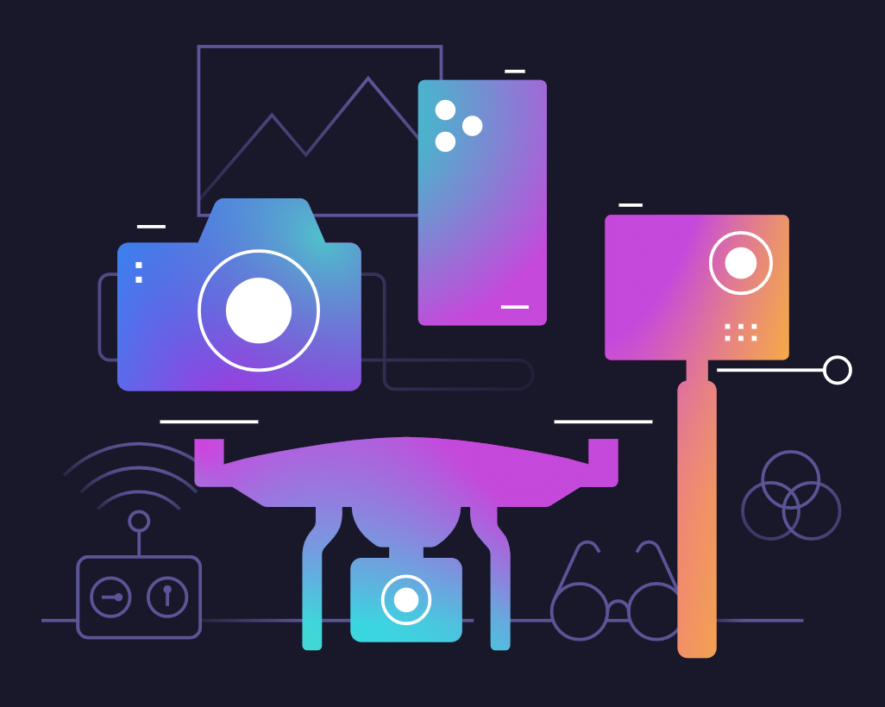

Dale a las imágenes un look y sensación compartidas
Aplicación de MacOS y Windows
y complemento para
LuminarAI Update 2
¡El cielo ya no es el límite!
Las tecnologías innovadoras dan un nuevo mundo de posibilidades para expresar sus ideas.
La IA se ocupa de las tareas aburridas para que puedas concentrarte en tu historia creativa.
Tanto si has sido fotógrafo durante 20 años o 20 segundos, obtendrás resultados increíbles desde el principio.
Conoce las Plantillas con Asistencia de la IA.
La IA sugiere las plantillas perfectas para cada imagen.
Así que no necesitas pasar horas eligiendo.
CuerpoAI
IrisAI
RostroAI
PielAI
AcentoAI
BokehAI
AtmósferaAI
EstructuraAI
CieloAI
ComposiciónAI
Una aplicación y extensión. Para macOS y Windows.
¡Claro! El procesamiento de RAW de LuminarAI está basado en nuestro propio y poderoso motor RAW. Actualizamos regularmente nuestra biblioteca y hacemos nuestras propias mejoras para proporcionar un soporte perfecto para las nuevas cámaras. Puedes consultar la lista completa de cámaras soportadas aquí.